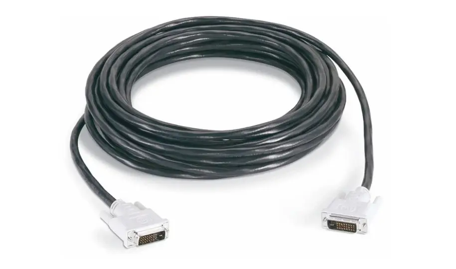

Кабельная продукция
Ассортимент Extron включает десятки типов кабельной продукции, а также всевозможные адаптеры для подключения того или иного оборудования. Компания производит не только традиционные витые пары и экранированные провода, но и оптоволоконные кабели для высокоскоростной передачи данных в самых требовательных сферах. Разъемы и адаптеры Extron характеризуются надежной фиксацией провода в разъеме, обеспечивающей безошибочную работу и быстрое подключение. А лучшие материалы и современные технологии производства гарантируют высокую производительность и скорость передачи данных при использовании кабельной продукции Extron. Кабели доступны как в обычном, так и пожаробезопасном исполнении.